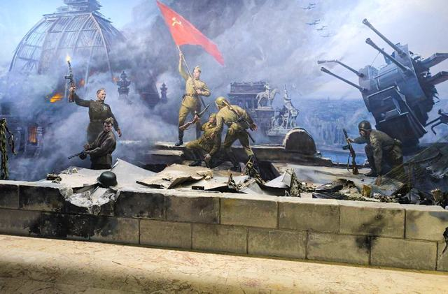
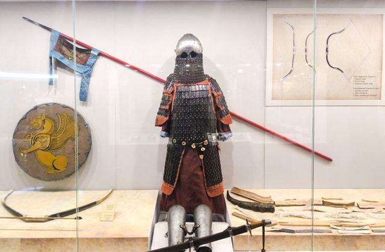
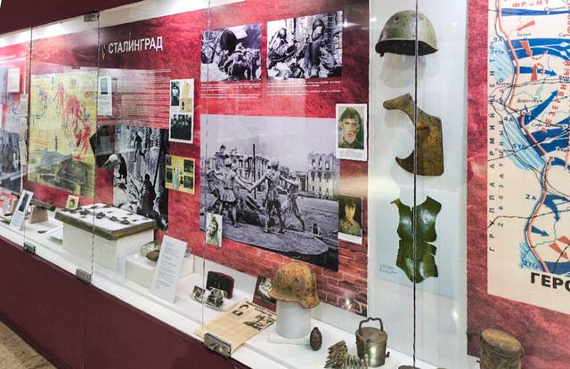
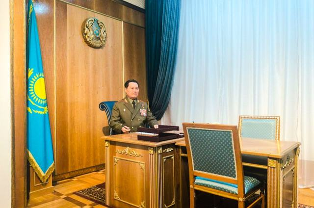
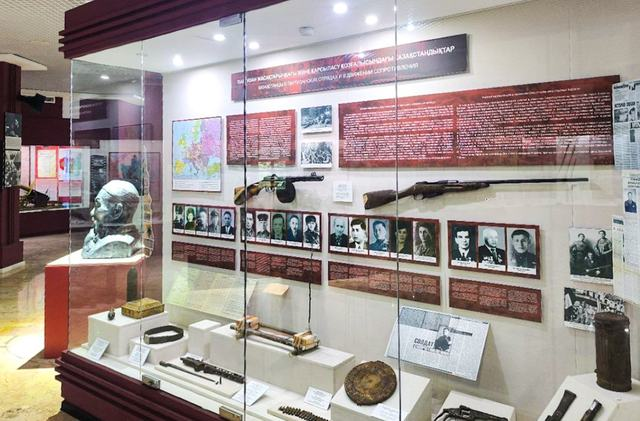

Военная история Казахстана
Как историки изучают войну — и как музей превращает эти исследования в предметы, перед которыми можно постоять.

Перейти: вехи или военная история как предмет музея.
Что такое военная история?
В научной литературе военная история определяется как изучение войн, военного искусства, вооружённых сил, военной техники и военной мысли. Эти области взаимосвязаны, когда исследователи реконструируют и осмысляют военный опыт.
Военная история в Казахстане
Исследование развития военной истории в Казахстане прослеживает её истоки через исторические источники и военный опыт. В нём описан рост военно-исторического образования после создания Вооружённых Сил Республики Казахстан в 1992 году.
Та же работа отмечает становление профессиональных военных историков и создание учреждений военно-исторического образования и исследований в независимом Казахстане.
Военная история как предмет музея


Өмір мен өлім арасындағы заттар
— подпись к витрине в зале XX века, Военно-исторический музей, Астана
Вехи, упомянутые в источниках
Четыре даты, обрамляющие историю музея.
- 1941–1942: формирование частей в Казахстане. Исследование 2024 года фиксирует более 50 частей и соединений, среди них:
- стрелковые дивизии;
- национальные кавалерийские дивизии.
- 1992: создаются ВС РК. В последующие годы развиваются военно-историческое образование и исследования.
- 1998: строится здание музейного комплекса. E-Museum датирует архитектурный комплекс 1998 годом.
- 2015: музей открывается в нынешнем виде. Visit Astana называет 2015 год годом открытия1.
1 Здание построено раньше: e-Museum относит комплекс к 1998 году.
Продолжить знакомство

2. Древность – XIX век
Доспехи, луки, шлемы и погребение коня из военного мира степи.

3. Военная история XX века
Алашский период, Великая Отечественная война и война в Афганистане.

4. Вооружённые Силы Казахстана
От создания вооружённых сил в 1992 году до современных сухопутных, противовоздушных и военно-морских сил.

7. Воинские формирования и части
Как формировались дивизии и бригады в Казахстане и как изучается их история.